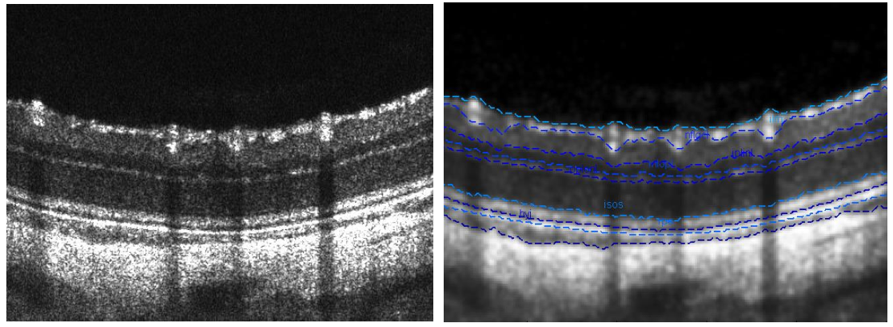

Automatic segmentation of nine retinal layers in SD-OCT images
Description:
Research on Automatic Layer Segmentation Algorithm for Mouse Retinal Optical Coherence Tomography Images
Time: Sep.2015 (One month)
Introduction:
The overall workflow involves several steps to achieve automatic layer segmentation of mouse retinal images. Firstly, the images are denoised using bilateral and Gaussian filtering algorithms. Next, edge detection is performed using the grayscale gradient algorithm to identify the edges in the images. Finally, an automatic layer segmentation algorithm is developed using the minimum path algorithm, which successfully segments the layers of the mouse retina.
Reslut:
